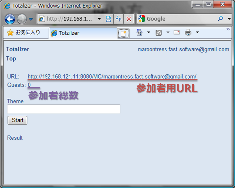
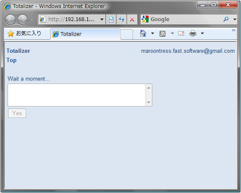

Totalizer
テレビ番組などでおなじみのトータライザーです。スイッチをもった会場の人に質問し、その該当者にスイッチを押してもらい、集計結果を表示して楽しみます。ここで紹介するものは、会場のスイッチと、集計結果の表示にウェブブラウザを用います。会議室に各自がPCを持ち寄って集まるような状況に適しています。
使用上の制約
司会者、参加者の全員がGoogleアカウントを持っている必要があります。
使用方法
会議室などでの使用を想定して、使い方を説明します。まず、司会者はウェブブラウザで司会者用ページにアクセスして、次のような画面を表示します。プロジェクタなどで、参加者全員が見えるようにするとよいでしょう。<

次に「参加者用URL」を、それぞれの参加者にブラウザで開いてもらいます。メールなどで伝えるとよいでしょう。参加者のブラウザには次のような画面が表示されます。なお、参加者がログインすると、司会者の画面上の「参加者総数」が増加します。

必要な参加者がそろったら、質問を参加者に伝えます。質問を明示したい場合は、テーマのテキストボックスに質問を書きます。口頭で伝える場合は、空欄のままでかまいません。質問の合意ができたら、司会者はスタートボタンを押してください。
スタートボタンを押すと、集計結果の数字がランダムに変化し始めます。約5秒後に結果が集計されるので、それまでに質問に該当する参加者はYesボタンを押してください。
集計結果が表示されたら終了です。